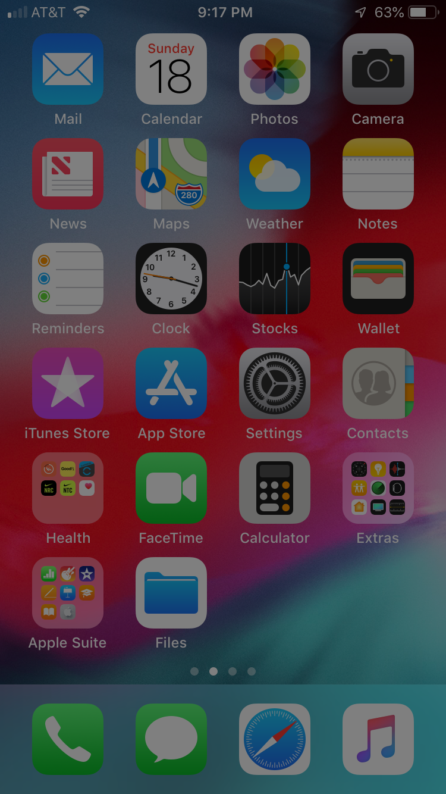

Intervention mid-level 03
Color Reducer
A combined experiment of low #17 (Glasses that tone down the color of screens but keep the rest of the world colorful) & low #21 (People-safe color palette).
With this experiment, I took two approaches: a mathematical reduction and a filter. The mathematical reduction can either be 75% of an RGB value or 75% of the saturation in an HSL value. The filter can either be a 50% opacity layer of black on top of the image or 50% reduction of saturation and contrast.
Other iterations: 17 21
With this experiment, I took two approaches: a mathematical reduction and a filter. The mathematical reduction can either be 75% of an RGB value or 75% of the saturation in an HSL value. The filter can either be a 50% opacity layer of black on top of the image or 50% reduction of saturation and contrast.
Other iterations: 17 21
Mathematical Reduction
RGB Red, 75% of RGB Red, 75% saturation of Red.
RGB Green, 75% of RGB Green, 75% saturation of Green.
RGB Blue, 75% of RGB Blue, 75% saturation of Blue.
Color Filter

The original image, 50% opacity layer of black on top of the image, 50% saturation and contrast filter.